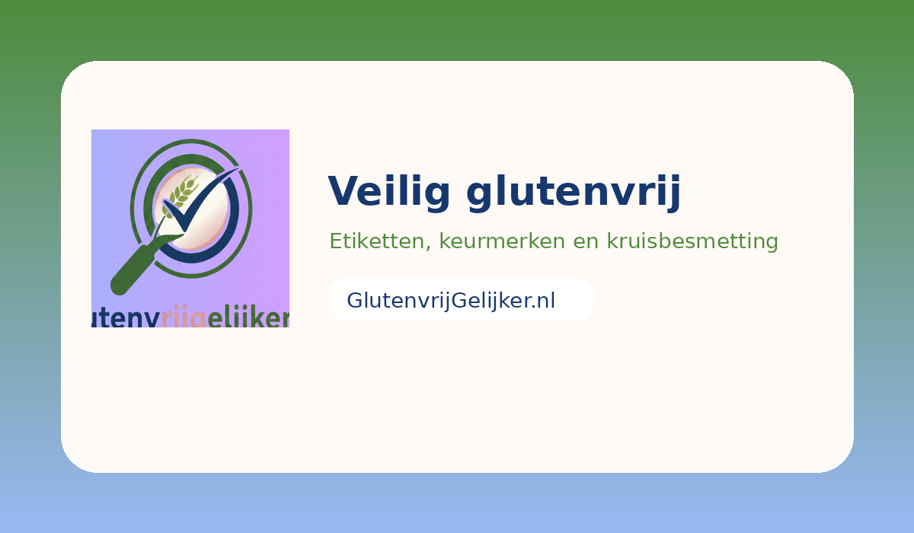

★
Mixbook-geïnspireerde uitstraling
Warme premium sfeer, duidelijke categorieblokken, grote hero en veel kaart-achtige secties.
Aanbiedingen, prijsvergelijkingen, veilige horeca, etiketten lezen, kruisbesmetting, school, uit eten en praktische gidsen. Alles op een rustige, warme en duidelijke manier bij elkaar.
Grote hero, duidelijke categorieblokken, veel visuele panelen, kaart-achtige secties en een rustiger premium merkgevoel dat past bij de kleuren uit jouw logo.
Warme premium sfeer, duidelijke categorieblokken, grote hero en veel kaart-achtige secties.
Je wijzigt de affiliate-url's voortaan op één centrale plek in plaats van verspreid door losse HTML-bestanden.
Sterke metadata, canonicals, structured data, sitemap, interne links en duidelijke informatie-architectuur.
Een selectie actuele webshopsignalen uit juni 2026. De complete snapshot staat op de aanbiedingenpagina. De zichtbare kaarten blijven staan; de url’s beheer je centraal.


Dat combineert het beste van twee werelden: bezoekers zien meteen echte inhoud en jij hoeft later je affiliate-links alleen nog centraal te beheren in één bestand.
Van coeliakiecijfers tot horeca-overzichten en groei van volledig glutenvrije locaties.
De geschatte prevalentie in Nederland is 0,5–1% en ongeveer 180.000 Nederlanders hebben coeliakie.
6% van de Nederlandse bevolking geeft aan klachten van gluten te krijgen en daarom glutenvrij te eten.
Een Nederlands overzicht noemde op 1 juni 2026 35 volledig glutenvrije restaurants in Nederland.
De NCV beheert een horeca-overzicht van glutenvrije locaties met keurmerk of controle.

Daarom staat er nu een aparte pagina “Veilig glutenvrij” op de site, zodat mensen snel die basisinformatie kunnen vinden.
Voorbeelden van plekken die in actuele overzichten terugkomen. Controleer vlak voor een bezoek altijd nog even de actuele situatie.
Komt terug in bekende glutenvrije horecaoverzichten en lijsten met volledig glutenvrije restaurants.
Wordt genoemd in het horecaoverzicht van de NCV.
Staat in het actuele horecaoverzicht van de NCV.
Komt terug in actuele glutenvrije overzichten.
Staat in een overzicht van volledig glutenvrije restaurants in Nederland.
Komt voor in glutenvrije horeca-overzichten.